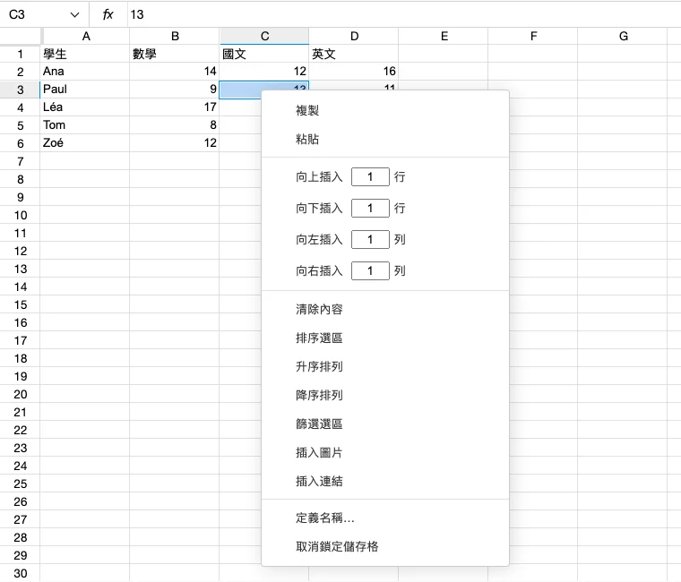

列與欄
大小
| 操作 | 效果 |
|---|---|
| 拖曳欄標題的右邊框 | 改變欄寬 |
| 拖曳列標題的下邊框 | 改變列高 |
| 按右鍵列標題或欄標題 › 寬、高 | 以畫素設定所有選中欄或列的大小 |
插入、刪除
在儲存格或欄列標題上右鍵：插入 1 行 上、插入 1 行 下、插入 1 列 左、插入 1 列 右。數量在框中輸入。在欄列標題上右鍵：删除選中 行、删除選中 列。

公式會自動調整：其參照隨移動的儲存格變化。上限為 10 000 列、1 000 欄。
隱藏
在欄列標題上右鍵 › 隱藏選中 行、隱藏選中 列。隱藏的儲存格仍會計算。要重新顯示，請選擇其兩側的欄列標題，然後右鍵 › 顯示隱藏。
凍結
凍結的列和欄在滾動時保持可見。選擇邊界儲存格，然後 或 檢視 › 凍結：
| 命令 | 保持可見 |
|---|---|
| 凍結至當前行 | 直到該儲存格所在列（含） |
| 凍結至當前列 | 直到該儲存格所在欄（含） |
| 凍結至當前行列 | 兩者 |
| 取消凍結 | 無 |
要保留標題列：按一下第 1 列的儲存格，凍結至當前行。